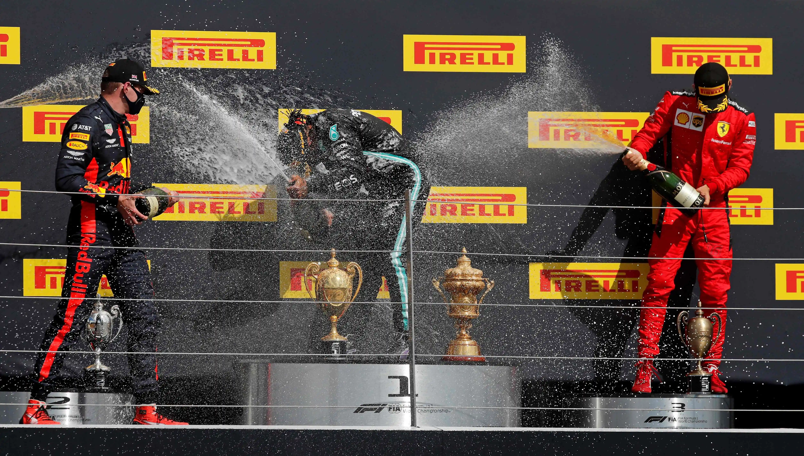
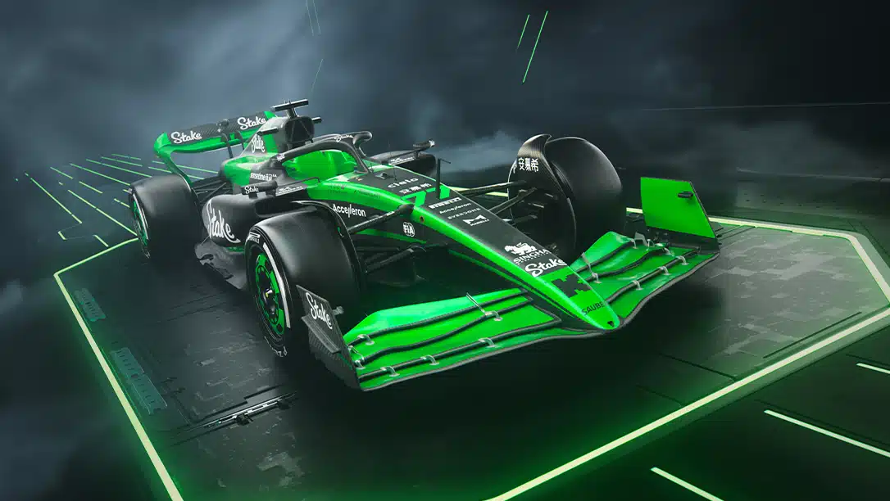
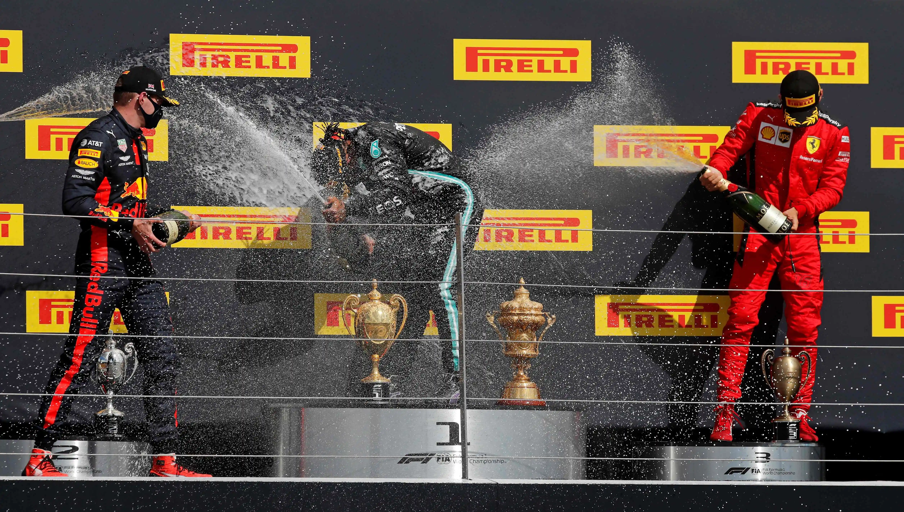
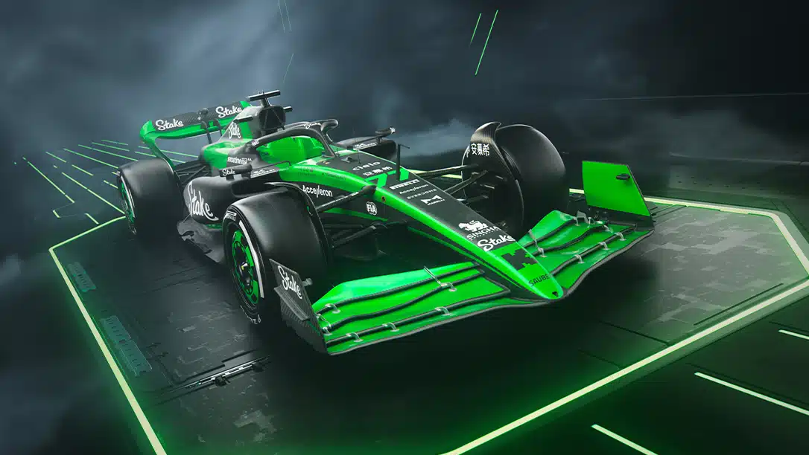

So What is F1
Formula 1 (F1) is the premier motorsport featuring top drivers racing high-performance
cars on circuits worldwide. Known for its advanced technology, strategic pit stops,
and intense competition, F1 culminates in a World Champion crowned at the end of each season.
With its global audience and blend of speed and skill, F1 is a thrilling spectacle.
The Journey to F1
Aspiring F1 drivers typically start in karting or junior racing series, then progress through
Formula 4, Formula 3, and Formula 2, gaining experience and catching the attention of F1 teams.
Successful racers may become test or reserve drivers before securing a full-time seat in Formula 1,
requiring a lot of talent, determination, and financial support.
Why I Love F1
I'm captivated by Formula 1 because it's more than just cars racing around a track—it's about the
intense competition, strategic maneuvers, and human stories behind every race. The adrenaline
rush of watching drivers push themselves to the limit on circuits worldwide and the brilliance
of human ingenuity in every aspect of the sport keep me hooked. Formula 1 isn't just a race;
it's a thrilling experience that ignites my passion like nothing else.
 


